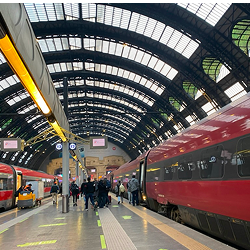
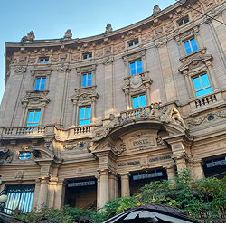
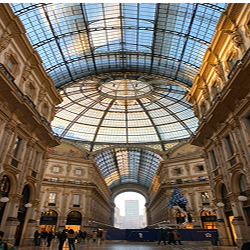
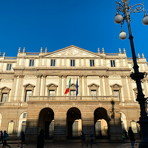
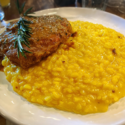
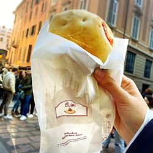
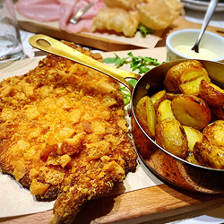
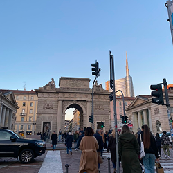

街紹介
Milano

イタリア北部、ロンバルディア州に位置し、イタリア第二の都市です。
ドゥオモ広場 にある壮麗な外観な ミラノ大聖堂 は、世界最大級のゴシック建築です。
すぐそばにある ガレリア・ヴィットリオ・エマヌエーレ2世 は、
18世紀に建設された優雅なアーケードで、洗練された雰囲気を楽しめます。
美食の街でもあり、サフランの風味が香る リゾット、骨付き仔牛肉の煮込み オッソブーコ、
サクッと揚げた コトレッタ・アッラ・ミラネーゼ など、伝統的な料理が堪能できます。







